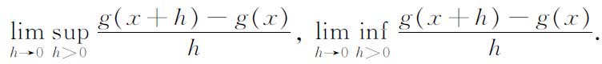

5．推广
我们已经指出过勒贝格积分在推广老的结果和在简洁地陈述级数定理方面的优点。在以后的几章里，我们还要遇到勒贝格思想的进一步应用。积分概念的许多推广是函数论的直接发展。在这中间，我们只准备提一下拉东（Johann Radon，1887—1956）的积分，它包含了斯蒂尔切斯积分和勒贝格积分，实际上它被称为勒贝格-斯蒂尔切斯积分(16)。这一推广不仅使得它包括的范围扩大了，或者使得它统一了n维欧几里得空间点集上的不同的积分概念，而且还扩展到像函数空间那样的更普遍的空间。这种更普遍的概念现在在概率论、谱理论、各态历经理论以及调和分析（广义傅里叶分析）中，找到了应用。
参考书目
Borel，Emile：Notice sur les travaux scientifiques de M．Emile Borel，2nd ed．，Gauthier-Villars，1921．
Bourbaki，Nicolas：Eléments d'histoire de mathématiques，Hermann，1960，pp．246-259．
Collingwood，E．F．：“Emile Borel，”Jour．Lon．Math．Soc．，34，1959，488-512．
Fréchet，M．：“La Vie et l'œuvre d'Emile Borel，”L'Enseignement Mathématique，（2），11，1965，1-94．
Hawkins，T. W．，Jr．：Lebesgue's Theory of Integration：Its Origins and Development，University of Wisconsin Press，1970，Chaps．4-6．
Hildebrandt，T．H．：“On Integrals Related to and Extensions of the Lebesgue Integral，”Amer．Math．Soc．Bull．，24，1918，113-177．
Jordan，Camille：Œuvres，4 vols．，Gauthier-Villars，1961-1964．
Lebesgue，Henri：Measure and the Integral，Holden-Day，1966，pp．176-194．译自法文La Mesure des grandeurs。
Lebesgue，Henri：Notice sur les travaux scientifiques de M．Henri Lebesgue，Edouard Privat，1922．
Lebesgue，Henri：Leçons sur l'intégration et la recherche des fonctions primitives，Gauthier-Villars，1904，2nd ed．，1928．
McShane，E．J．：“Integrals Devised for Special Purposes，”Amer．Math．Soc．Bull．，69，1963，597-627．
Pesin，Ivan M．：Classical and Modern Integration Theories，Academic Press，1970．
Plancherel，Michel：“Le Développement de la théorie des séries trigonométriques dans le dernier quart de siècle，”L'Enseignement Mathématique，24，1924／1925，19-58．
Riesz，F．：“L'Evolution de la notion d'intégrale depuis Lebesgue，”Annales de l'Institut Fourier，1，1949，29-42．
————————————————————
(1) Ann．Fac．Sci．de Toulouse，8，1894，J．1-122，与9，1895，A．1-47＝Œuvres complètes，2，402-559．
(2) Math．Ann．，23，1884，152-156．
(3) Math．Ann．，23，1884，453-488＝Ges．Abh．，210-246．
(4) Jour．deMath．，（4），8，1892，69-99＝Œuvres，4，427-457．
(5) Annali di Mat．，（3），7，1902，231-259．
(6) Atti della Accad．dei Lincei，Rendiconti，（4），1，1885，321-326，532-537，566-569．
(7) 例如Ann．del'Ecole Norm．Sup．，（3），20，1903，453-485。
(8) Math．Ann．，61，1905，251-280．
(9) Acta Math．，30，1906，335-400．
(10) Gior．di Mat．，19，1881，333-372＝Opere Mat．，1，16-48．
(11) g的两个右导出数是两个极限

两个左导出数也类似地定义。
(12) Atti della Accad．dei Lincei，Rendiconti，（5），16，1907，608-614．
(13) Ann．de l'Ecole Norm．Sup．，（3），27，1910，361-450．
(14) Atti Accad．Torino，43，1908，229-246．
(15) Comp．Rend．，128，1899，1502-1505．
(16) Sitzngsber．derAkad．der Wiss．Wien，122，Abt．IIa，1913，1295-1438．